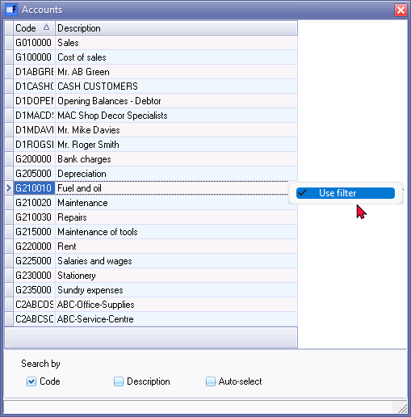
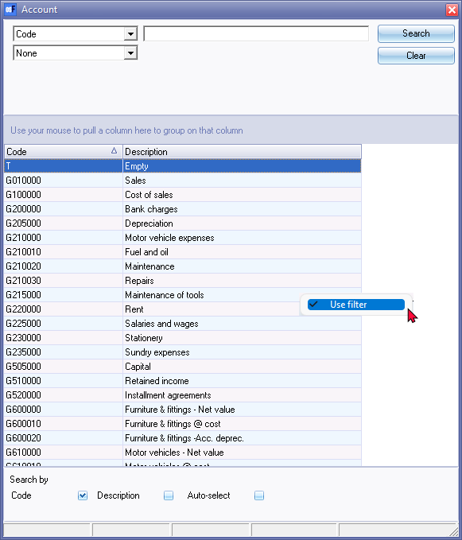
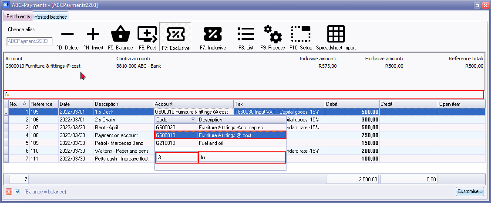
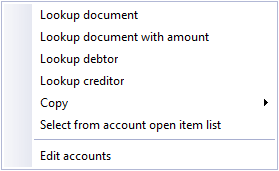
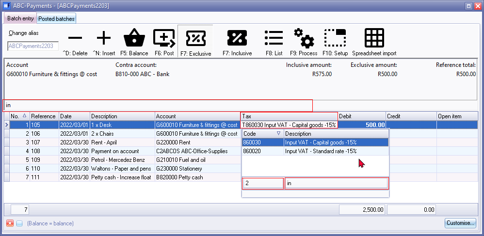
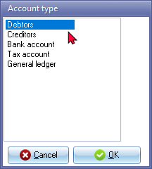

Accounts lookup - Batches
When the cursor is in various fields on a screen, osFinancials will display the lookup screen for that specific field. A lookup screen is basically a list of all the valid master records in a Set of Books from which you need to select one item from the list.
Some lookup screens contains all accounts. Other lookup screens lists only ledger accounts / only debtor accounts and / only creditor accounts.
|
|
Disabled or blocked accounts will be excluded from some lookups. Debtor / Creditor accounts - "Account disabled" field selected (ticked) on Accounting information tab (Default ribbon). Accounts - "Status" field set to "Disabled". (Setup → Accounts on the Setup ribbon). For example;
|

Account lookup for Contra account in batch setup
The last selected contra account for a batch will be displayed in the Batch entry selection screen.

If no contra account is displayed in the Contra account, you need to select a contra account.
If a contra account is displayed in the Contra account column, and you wish to select a different contra account for a selected batch, you may change it.
The options to select a contra account is as follows:
- Access the batch.
- Click on the F10:Setup - Options for this batch - Standard tab.
- Select the contra account on the "Accounts" lookup.

|
|
Bank accounts - Payments and receipt batches - Select contra accounts disabled. When creating Bank accounts, a Payments and Receipt batch is linked to the bank account. The Bank account will be by default set as the contra account of the Payments and Receipt batches. The select Contra account option, will for this reason be disabled for Payments and Receipt batches linked to Bank accounts. |
|
|
You may also go to the Setup ribbon and select Setup → Batch types. Then click on the Edit button to launch the F10:Setup - Options for this batch - Standard tab. |

Account lookup for ledger reports

Account lookup for selecting accounts when entering transactions
The lookup in the batch entry screen automatically filter the code or the description. When the Account or Tax columns are focused, you may type the code or description. In this example, the description is typed as “fu” and it lists only those accounts with the starting with the typed characters, e.g. Fuel and Oil and Furniture...

|
|
The number of records matching your search characters will be displayed. Your search characters entered will be displayed at the bottom of the lookup as well as above the column descriptions. |
|
|
You may configure the Account types to be included in the lookup Account lookup. On the F10:Setup Advanced tab, you may set the Account lookup type to:
|
|
|
Context menu (right-click) lookup on Batch entry screen:  You may right-click on a selected transaction to allocate a transaction to a debtor (customer / client) or creditor (supplier) account, or to copy and paste a contra account, reference or date from one transaction to other transaction(s) |
Configure the account lookup list for batches
To display only the accounts for the specific transactions you need to enter in the batch, you may configure the accounts to be listed in the lookup.
To do this, you may select the Account lookup type option and the Contra account lookup type option on the F10:Setup - Options for this batch - Advanced tab as follows:
- All - select to display all accounts (i.e. General ledger, Debtors, Creditors and Special ledgers).
- General ledger - select to display all General ledger accounts (excluding Debtors, Creditor and Special ledgers). Examples would be if only need to enter and process transactions which does not apply to Debtors or Creditor accounts, e.g. Depreciation or adjustments to General ledger accounts in the General journal. Other examples would be cash purchases in the Payments journal or Petty cash payments journal which need to be allocated to the Expense and Asset accounts).
- Debtors - select to display only Debtor accounts (excluding General ledger, Creditors and Special ledgers). An example would be if only sales invoices are batched and entered into the Sales journal for which you only need to select the Debtor accounts. Another example would be if you only batch or group deposits (receipts) for payments received from Debtors.
- Creditors - select to display all Creditor accounts (excluding General ledger, Debtors, and Special ledgers). An example would be if only purchase invoices (received from creditors) are batched and entered into the Purchase journal for which you only need to select the Creditor accounts. Another example would be if you only batch or group a payments (cheque counterfoils or payment remittance advises) for payments made to Creditors.
Tax column - Tax lookup
If the No tax option on the F10:Setup - Options for this batch - Standard tab is not ticked (default option), the Tax lookup list will also be displayed.

|
|
The number of records matching your search characters will be displayed. Your search characters entered will be displayed at the bottom of the lookup as well as above the column descriptions. |
|
|
If the No tax option on the F10:Setup - Options for this batch - Standard tab is ticked, the Tax column and Tax lookup list will not be displayed. |
Create accounts if the account does not exist
If you enter an invalid account code or account description in the standard filter options for the account lookup in the Accounts column for a transaction, a confirmation message will be displayed.
"w Account does not exist, do you wish to create it?" (where "w" does not exist in the chart of accounts, debtor accounts or creditor accounts)
If you click on the No button, you will be returned to the batch entry screen, on which you may select a different account.
If you click on the Yes button, you may select the "Account type" screen is displayed:

Select the account type for which you need to create a new account. The account types will launch the screens as follows:
- Debtors - The "Debtor accounts" list screen, will be displayed on which you may use the search and filter options to locate a debtor (customer / client) account. If the account does not exist, you may click on the New button and create a new debtor (customer / client) account.
- Creditors - The "Creditor accounts" list screen, will be displayed on which you may use the search and filter options to locate a creditor (supplier / vendor) account. If the account does not exist, you may click on the New button and create a new creditor (supplier / vendor) account.
- Bank account, Tax account and General ledger account - The Accounts screen will be displayed. You may filter for that account and create the new account, if necessary.